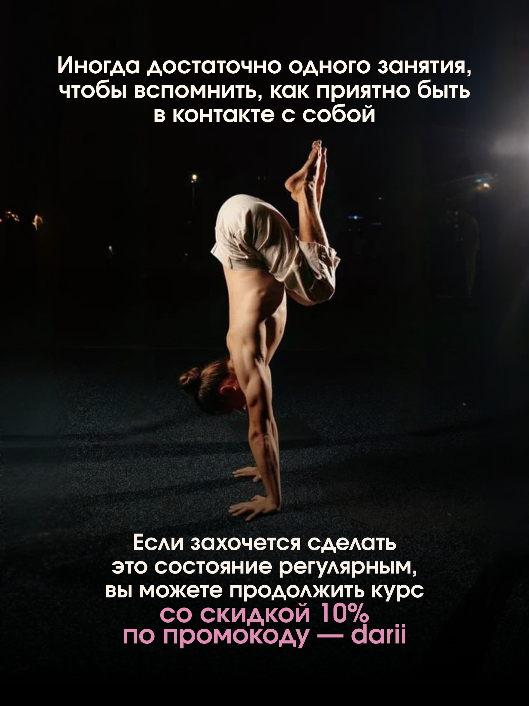
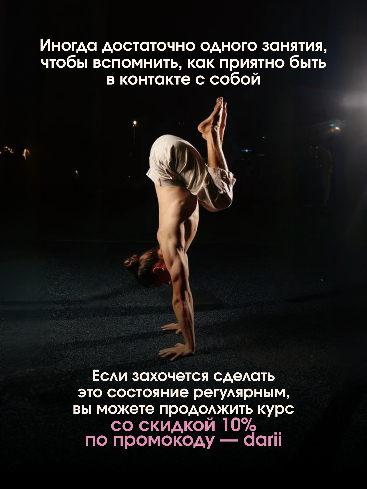

Если Вы не хотите сканировать QR-код каждый раз вручную, то подпишитесь на нас в Telegram:
https://telegra.ph/darii-07-28
Попробуйте отключить VPN, если ссылка не откроется с первого раза.

 

Открыть гайд
в Telegram
Посмотреть практику для спокойствия и ясности
в VK.Видео
Посмотреть мягкую физическую практику для включения тела
в VK.Видео
Не забудьте отключить VPN, если ссылка не откроется с первого раза.
Александр в Telegram:
Эволюция с Александром Шанти — основной канал: размышления, трансформация, новости.
Ленивая йога — простые упражнения, доступные каждому. Техники, расслабление, тело без усилий.
Разборы с Александром Шанти — психология, работа с повторяющимися сценариями, глубинные разборы.
Ещё больше видео:
Александр Шанти YouTube — видео-контент, практики, лекции, эфиры.
Канал RuTube Александр Шанти — видео-контент, дублируется с YouTube.
Сообщество ВКонтакте — публикации, взаимодействие, анонсы.